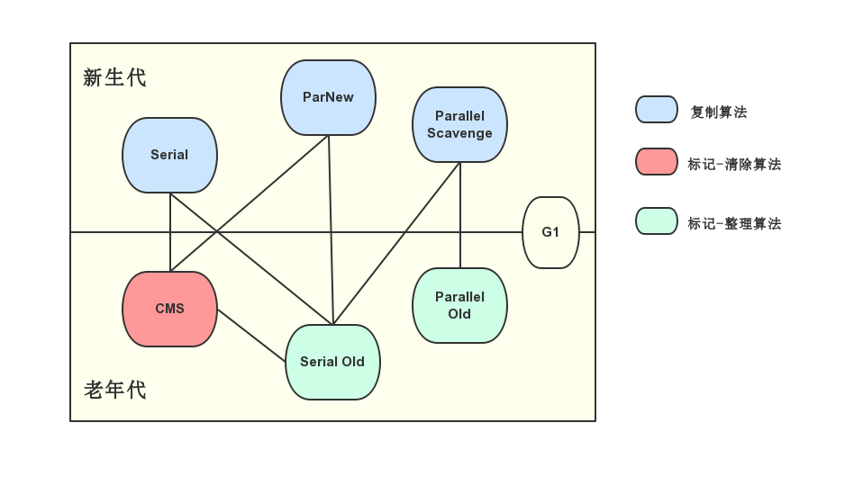
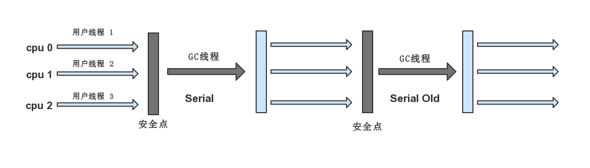
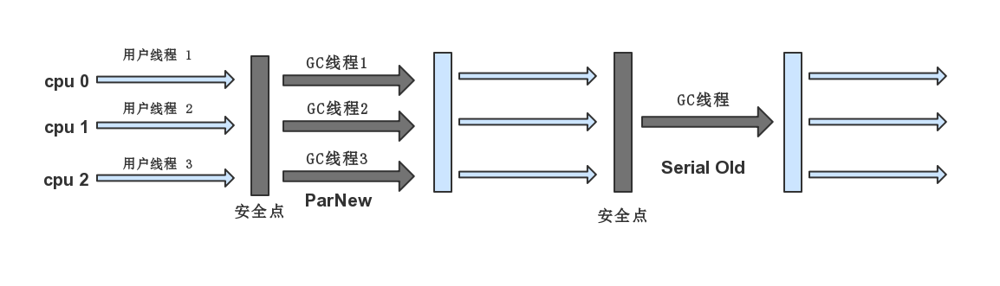
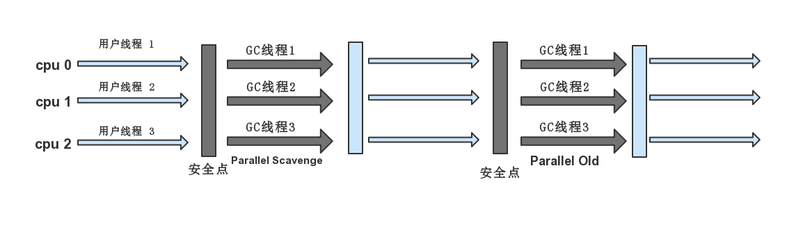
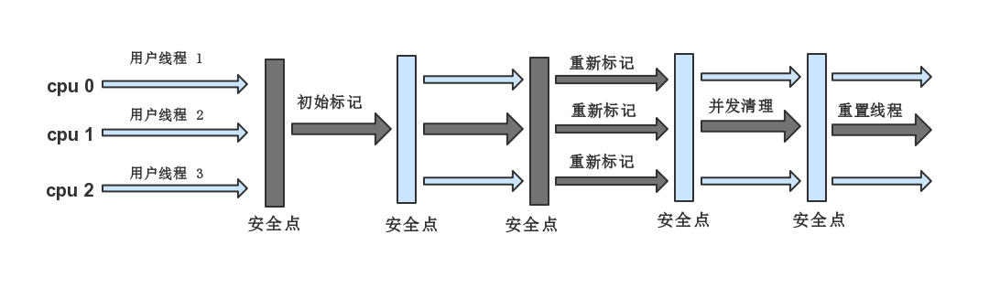
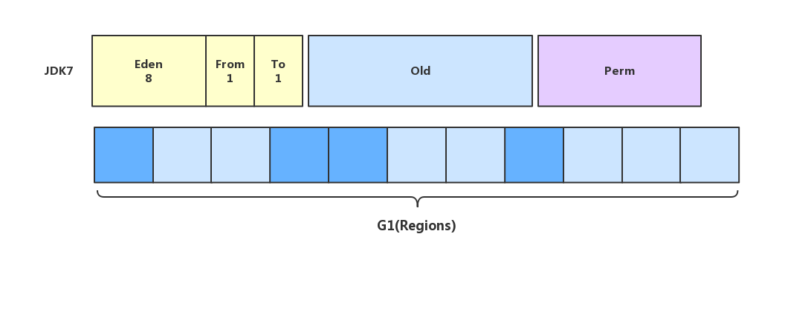

收集算法是内存回收的理论依据，垃圾收集器就是内存回收的具体实现。Java虚拟机的规范对垃圾收集器应该如何实现并没有任何规定，因此不同的厂商、不同版本的虚拟机所提供的垃圾收集器差别很大。下图是JDK1.6Update22所提供的7种垃圾收集器（G1收集器在此版本属于实验版本，直到JDK1.7 Update14，Hotspot才正式提供了商用的G1收集器）

现代的商用JVM，采用的都是分代收集算法，老年代和新生代的垃圾收集器配合使用，共同完成堆和方法区的GC。上图两个存在连线的收集器，表示可以搭配使用，接下来逐个介绍垃圾收集器。
新生代收集器
Serial
先看看官方文档怎么介绍它
The discussion to this point has been about the serial collector. The Java HotSpot VM includes three different types of collectors, each with different performance characteristics.
- The serial collector uses a single thread to perform all garbage collection work, which makes it relatively efficient because there is no communication overhead between threads. It is best-suited to single processor machines, because it cannot take advantage of multiprocessor hardware, although it can be useful on multiprocessors for applications with small data sets (up to approximately 100 MB). The serial collector is selected by default on certain hardware and operating system configurations, or can be explicitly enabled with the option
-XX:+UseSerialGC.
Serial收集器是最早的收集器，在JDK1.3.1之前，作为新生代虚拟机唯一的选择，它是一个单线程的收集器。即使有多个CPU的处理器，它也只会使用其中一个和单个线程去完成垃圾收集工作，更糟糕的是在它进行垃圾收集时，必须暂停其他所有工作线程（也就是Stop The World），直到GC结束，以下是Serial / Serial Old一起工作的示意图。

Stop The World是在后台进行的，对用户不可见，因此停顿对用户体验的影响是非常大的。虽然GC的停顿在所难免，但是Hotspot的工程师们一直在致力于优化并开发出效率更高，停顿时间更短的垃圾收集器。Serial虽然古老、过时，但是与其他收集器的单线程比较，它是相对高效的，并且仍然是Client模式下新生代的默认收集器。对于单CPU环境而言，Serial没有线程切换的开销，“专心”的做垃圾回收工作自然效率很高。在GUI应用中，分配给JVM的内存一般不会很大（通常不会超过100MB），短暂的停顿是可以接受的。
ParNew
ParNew收集器其实就是Serial收集器的多线程版本，他的实现复用了Serial相当多的代码，因此除了使用多条线程收集垃圾外，Serial可用的参数（比如：-XX:SurvivorRatio、-XX:PretenureSizeThreshold、-XX:handlePromotionFailure等）。ParNew的工作示意图：

ParNew是Server模式下虚拟机中首选的新生代收集器，除了多线程回收这个特点外，还有一个与性能无关的原因是，除了Serial，只有它能够与CMS配合工作，如果在老年代启用-XX:+UseConcMarkSweepGC参数开启CMS，则新生代默认使用ParNew收集器，当然，也可以使用-XX:+UseParNewGC参数来强制开启。ParNew在单核CPU下由于存在线程切换的开销，GC性能并没有比Serial好，即使在双核CPU通过超线程技术都不能肯定的保证性能优于Serial收集器。当然，随着CPU的数量增加，在GC时的资源利用是有利的，可以通过-XX:ParallelGCThreads参数来限制GC的线程数。
Parallel Scavenge
Parallel Scavenge（以下简称PS）也是一个新生代的收集器，基于复制算法、并行的多线程收集器，它与ParNew的差异在哪？
PS的关注点与其他垃圾收集器不同，CMS等收集器关注的是尽可能的缩短Stop The World的时间，而PS更关心是否达到可控的吞吐量（Throughput）。
什么是吞吐量？
CPU运行用户代码的时间占CPU总消耗时间的比值，即
吞吐量 = 运行用户代码时间 / （运行用户代码时间 + GC耗时）
虚拟机总共耗时100min，GC耗时1min，吞吐量为99%
停顿时间越短，适合需要与用户频繁交互的程序。吞吐量高则可以有效的利用CPU时间，尽快完成程序的运算任务，适合后台程序，以下几个参数可以影响PS收集器的吞吐量：
-XX:MaxGCPauseMillis控制最大GC停顿时间，没有默认值，单位是毫秒。垃圾回收时尽量保证时间不超过设定值。但是，这个值不是越小越好，过小的设定值反而适得其反。例如原本10秒回收一次，停顿100毫秒，调小后变成5秒回收一次，停顿70毫秒。停顿时间确实缩短了，但是频率增加了，吞吐量也下来了。GC停顿时间缩短是以牺牲吞吐量和新生代的空间为代价的。
-XX:GCTimeRatio回收时间占总时间的比率，相当于是吞吐量的倒数。默认为99，就是允许最大GC耗时占1%。
-XX:+UseAdaptiveSizePolicy当这个参数打开后，新生代的大小（
-Xmn）、Eden与Survivor的比例（-XX:SurvivorRatio）、晋升老年代对象年龄（-XX:PretenureSizeThreshold）等参数就不需要设置了，虚拟机会根据当前系统的运行状况收集性能监控信息，动态调整这些参数以提供最合适的停顿时间和最大的吞吐量。这种方式称为GC自适应调节策略（GC Ergonomics）。
-Xmx最大堆大小
如果对JVM的手工优化不太在行，可以开启以上参数，让PS配合自适应调节策略，是很不错的选择。满足以上参数设置存在先后顺序，优先级是：
- 最大停顿时间
- 最大吞吐量
- 满足以上两点，堆的最小大小
老年代收集器
Serial Old
Serial Old（以下简称SO）是Serial收集器的老年代版本，它采用的是标记-整理算法。在Client模式下作为默认的老年代收集器使用，在Server模式下，它有以下用途：
与Parallel Scavenge搭配使用
[^注]: Parallel Scavenge在老年代中有PS MarkSweep收集器来进行老年代收集，并没有直接使用Serial Old。但是它的实现与Serial Old很接近，官方资料中都用Serial Old替代PS MarkSweep
作为CMS失败的备选收集器
它的工作示意图如下：
Serial Old和Serial没有太大区别，也是一个单线程的收集器。
Parallel Old
Parallel Old（以下简称PO）是PS收集器的老年代版本，使用多线程和标记-整理算法。这个收集器是从JDK1.6之后开始提供的，在此之前，新生代PS一直处于尴尬的位置。如果新生代选择了PS收集器，老年代除了SO收集器外别无选择。但是SO是单线程的，在Server模式下性能不好，即使配合PS收集器也不一定能够获得吞吐量的最大化效果，甚至不如ParNew + CMS的组合给力。
直到PO的出现，”吞吐量优先“终于有了比较名副其实的组合。在吞吐量优先的场景下，可以优先使用PS+PO组合，他们的工作示意图如下：

CMS
CMS收集器是一种以获取最短停顿时间为目标的并发收集器。主要应用在Server端，重视服务的响应速度，减少停顿时间。首先要了解一下两个概念：并发与并行
并发（Concurrent）：用户线程与GC线程同时执行（不一定并行，可能交替执行），用户程序继续执行，而GC线程在另一个CPU上运行。
并行（Parallel）：多条GC线程同时工作，但此时用户线程仍然处于等待状态。
从以上概念来看，ParNew和Parallel Scavenge都属于并行收集器，GC线程运行时，用户线程必须停止。而CMS的GC线程可以与用户线程同时运行在不同的CPU上。它的运行过程相对于前面几个垃圾收集器更复杂一些，整个过程分为以下4步：
初始标记（CMS initial mark）(STW)
仅仅只是标记以下GC Roots能直接关联到的对象，速度很快
并发标记（CMS concurrent mark）
就是进行GC Roots Tracing的过程，此时用户线程也在运行，会产生对象可达性状态变化
重新标记（CMS remark）(STW)
对并发标记过程中可达性状态变化的对象再次标记，这个停顿时间比初始标记略长
并发清除（CMS concurrent sweep）
初始标记、重新标记都要Stop The World。
CMS工作示意图如下：

使用-XX:+UseConcMarkSweepGC参数在老年代启用CMS收集器。
CMS的优点表现在：并发收集、低停顿，官方文档也称之为并发低停顿收集器（Concurrent Low Pause Collector），但是CMS也存在以下三个明显的缺点：
对CPU资源非常敏感。
在GC运行时，虽然用户线程不会停止，但是会因为占用了一部分CPU资源而导致响应变慢，总吞吐量降低。CMS默认的回收线程数=(N+3)/4，也就是当CPU在4个以上时，并发回收的GC线程占用不超过25%的CPU资源。但是CPU不足4个时，CMS对程序的影响就变得很大，如果CPU负载本来就比较大时，还分出一半的运算能力去执行GC线程，就会导致用户线程执行速度突降50%。此时虚拟机为了应对这种情况，提供了一种”增量模式“（Incremental Mode）。
Incremental Mode
Note that the incremental mode is being deprecated in Java SE 8 and may be removed in a future major release.
The CMS collector can be used in a mode in which the concurrent phases are done incrementally. Recall that during a concurrent phase the garbage collector thread is using one or more processors. The incremental mode is meant to lessen the effect of long concurrent phases by periodically stopping the concurrent phase to yield back the processor to the application. This mode, referred to here as i-cms, divides the work done concurrently by the collector into small chunks of time that are scheduled between young generation collections. This feature is useful when applications that need the low pause times provided by the CMS collector are run on machines with small numbers of processors (for example, 1 or 2).
所谓”增量模式“，就是在并发标记、并发清理时让GC线程和用户线程抢占CPU资源，交替运行，减少GC线程独占CPU的时间，延长整个GC过程，对用户线程的影响尽可能的减小。但是在JDK8中，这个模式已经不建议使用了。
浮动垃圾碎片（Floating Garbage）无法处理。由于GC线程运行时，用户线程并没有停止，此时还会有新的垃圾产生，就好比垃圾车一边在清理路上的落叶，而此时一阵风刮过，落叶又落在了已经清理过的区域上。这一部分的垃圾出现在标记过程后面，无法在本次GC种处理，只能等待下一次GC。因此CMS不能像其他收集器一样，等老年代填满了之后才进行GC，必须预留一定的空间给用户线程，可以调整参数
-XX:CMSInitiatingOccupancyFraction的值来设置百分比，默认情况下设定值为68%。如果CMS运行期预留的内存无法满足新生代内存晋升的需求，就会出现一次Concurrent Mode Failure，此时就会启动预备方案，采用Serial Old对老年代进行回收，这样性能就更差了，设定合理的参数，预留老年代内存百分比就非常重要了。内存碎片
CMS是基于标记-清除算法的收集器，这意味着每次GC之后都会产生大量的不连续内存空间，内存碎片过多，在分配大对象时就找到不足够的连续空间进行分配，不得不提前触发一次Full GC。为了解决这个问题，CMS提供了
-XX:+UseCMSCompactAtFullCollection参数，在Full GC之后触发一次内存碎片整理。内存碎片的问题解决了，但是停顿时间变长了，从这个角度出发，并不是每次GC后都要进行内存碎片整理，因此另一个参数-XX:CMSFullGCsBeforeCompaction可以设置多少次不压缩的Full GC后，进行一次内存碎片整理。
G1收集器
G1（Garbage-First）是一款面向服务端应用的收集器，HotSpot开发团队希望它将来能替换CMS收集器，与其他收集器对比，G1有以下特点：
内存划分
G1也采用分代收集的方式，但是它的内存划分与其他收集器不一样，从逻辑上虽然保留了新生代、老年代、方法区的概念，但不再是物理隔离，而是划分为多个大小固定的独立区域（Region）。

G1可以独立管理整个堆，根据这些Region的垃圾堆积程度，在后台维护一个优先列表，每次根据允许收集的时间，优先回收垃圾最多的区域（这就是Garbage First名字的由来）。正因为区域划分和优先级的区域回收，保证了G1收集器在有限时间内可以获得最高的收集效率。
无内存碎片
G1是基于标记-整理算法实现的收集器，它不会产生内存碎片，造成大对象无法分配内存的情况。
可预测的停顿
这是G1相对于其他收集器的最大优势，它可以非常精确的控制停顿，即指定M毫秒内，停顿时间不得超过N毫秒
G1运行时过程分为以下几步：
初始标记（Initial Marking）（STW）
仅仅只是标记一下GC Roots 能直接关联到的对象，并且修改TAMS（Nest Top Mark Start）的值，让下一阶段用户程序并发运行时，能在正确可以的Region中创建对象，此阶段需要停顿线程，但耗时很短。
并发标记（Concurrent Marking）
从GC Root 开始对堆中对象进行可达性分析，找到存活对象，此阶段耗时较长，但可与用户程序并发执行。
最终标记（Final Marking）（STW）
为了修正在并发标记期间因用户程序继续运作而导致标记产生变动的那一部分标记记录，虚拟机将这段时间对象变化记录在线程的Remembered Set Logs里面，最终标记阶段需要把Remembered Set Logs的数据合并到Remembered Set中，这阶段需要停顿线程，但是可并行执行
筛选回收（Live Data Counting and Evacuation）
首先对各个Region中的回收价值和成本进行排序，根据用户所期望的GC 停顿是时间来制定回收计划。此阶段其实也可以做到与用户程序一起并发执行，但是因为只回收一部分Region，时间是用户可控制的，而且停顿用户线程将大幅度提高收集效率。
几种收集器的比较
| 收集器 | 方式 | 内存区域 | 算法 | 特点 | 适用场景 |
|---|---|---|---|---|---|
| Serial | 串行 | 新生代 | 标记-复制 | 单线程 | 单核Client模式 |
| ParNew | 并行 | 新生代 | 标记-复制 | 多线程、可与CMS搭配 | 多核Server模式 |
| Parallel Scavenge | 并行 | 新生代 | 标记-复制 | 多线程、吞吐量优先 | 后台运算、交互少 |
| Serial Old | 串行 | 老年代 | 标记-整理 | 单线程、CMS的后备方案 | 单核Client |
| Parallel Old | 并行 | 老年代 | 标记-整理 | 多线程、吞吐量优先 | 后台运算、交互少 |
| CMS | 并发 | 老年代 | 标记-清除 | 多线程、并发收集 | B/S服务端 |
| G1 | 并发 | 全部 | 标记-整理、标记-复制 | 多线程、并发、停顿可预测 | B/S服务端、替换CMS |
内存分配
Java的自动内存管理策略最终可以归结为自动化的解决两个问题：
- 如何给对象分配内存
- 如何回收分配给对象的内存
前面已经讨论了如何回收分配给对象的内存，现在一起研究如何给对象分配内存。所有的对象，都是在堆上分配内存（有些经过JIT编译后被拆分成变量类型并直接在栈上分配），分配内存主要有以下几种方式：
- 在新生代的Eden区分配
- 如果启动本地线程分配缓冲，优先在TLAB上分配
- 也可能直接分配在老年代种（大对象直接进入老年代）
这些分配方式取决于对象的大小、JVM的参数设置和选用哪一种垃圾收集器组合。
首先了解一下GC的几种方式
Minor GC
发生在新生代的GC，因为Java对象大多朝生夕死，所以Minor GC非常频繁。
Major GC
老年代GC，清理老年代区域的内存，可能伴随着Minor GC。
Full GC
清理整个堆空间—包括年轻代和老年代。
优先分配Eden区
大多对象，都在新生代Eden区中分配，当Eden区内存不足时，将发起一次Minor GC。
以下代码为例，设置堆大小20MB，不可扩展，其中新生代10MB，老年代10MB，新生代中Eden取与Survivor的比例为8:1。尝试分配3个2MB的对象和1个3MB的对象，开启-XX:+PrintGCDetails观察输出结果。
1 | /** |
输出结果：
1 | [GC [PSYoungGen: 7801K->608K(9216K)] 7801K->6752K(19456K), 0.0279404 secs] [Times: user=0.00 sys=0.00, real=0.04 secs] |
从上面可以看出，新生代的可用内存为9216K（Eden区内存8192K+1个Survivor区域内存1024K），a1、a2、a3的内存都分配在Eden区上，当分配a4时，剩余内存不足3MB，因此进行一次Minor GC：7801K->608K。GC之后内存总占用并没有减少，因为a1、a2、a3都还存活着，他们晋升进入了老年代，老年代占用6687K，此时Eden区有足够的空间分配a4，整个新生代占用3237K内存全部分配在Eden上。以上过程足以说明，对象分配内存时，优先分配在Eden区，Eden区内存不足时，发起一次Minor GC，存活的对象晋升，非存活的对象内存被回收。
大对象直接进入老年代
大对象是指需要大量连续内存空间的Java对象，最典型的大对象就是那种很长的字符串及数组，比如上面代码中的byte[]数组。频繁出现大对象容易导致内存还有不少空间时提前触发GC以获取连续的内存空间来分配他们，在实际工作中，更要避免这种大量的”短命“大对象。
-XX:PretenureSizeThreshold参数可以设置阈值，如果对象大于这个阈值可以直接进入老年代进行内存分配，这么做的目的是为了避免Eden区和两个Survivor之前频繁发生内存拷贝。还是以上面的代码为例，我们将阈值设置为3MB，使得a4直接进入老年代分配内存。注意：此时要将收集器改为ParNew。
-XX:PretenureSizeThreshold参数只对Serial和ParNew有效，对Parallel Scavenge不起作用，Parallel Scavenge一般也不需要设置。如果遇到必须使用该参数的场景，可以考虑ParNew + CMS的收集器组合。
1 | /** |
运行结果如下：
1 | Heap |
GC收集器设置成ParNew，此时并没有发生Minor GC，老年代内存占用3027K，说明a4直接进入老年代分配了内存空间。
长期存活对象将进入老年代
JVM既然采用了分代收集的思想来管理内存，那么回收时就必须识别哪些对象存活于新生代、哪些对象存活于老年代。为了达到此目的，JVM为每个对象都定义了一个对象年龄（Age）计数器。如果对象在Eden区经过一次Minor GC后依然存活，并且Survivor的内存空间足以分配给它，该对象就会被移到Survivor空间中，此时对象年龄为1。对象在Survivor中每经历一次Minor GC，年龄就+1，当它达到一定的年龄时（默认age=15），就会晋升到老年代。这个阈值可以由-XX:MaxTenuringThreshold来设置，-XX:+PrintTenuringDistribution输出对象的年龄。
以下代码为例，将进入老年代的阈值设置为1，观察内存空间的变化。
1 | /** |
输出结果：
1 | [GC[DefNew |
第一次GC发生时，新生代6009K->772K，总内存占用4868K，a1留在Survivor区，而Survivor空间不足以分配给a2，a2直接进入老年代，第二次GC发生时，新生代5054K->0K，a1从Survivor进入老年代，总内存几乎不变。
动态对象年龄判定
为了更好地适应不同程序的内存情况，JVM并非总是要求对象年龄必须达到阈值才能晋升，如果在Survivor区中相同年龄的所有对象大小的总和大于Survivor空间的一半，年龄大于或等于该年龄的对象就可以直接晋升，无需达到阈值。
1 | /** |
输出结果：
1 | [GC[DefNew |
从结果分析，新生代的Survivor区内存占用变成0，而老年代的内存占用49%，说明a1、a2都直接晋升到了老年代，因为他们的内存占用512K，已经达到了Survivor的一半。
空间分配担保
在发生Minor GC时，JVM会检测之前每次晋升到老年代的平均大小是否大于老年代的剩余空间大小，如果大于，改为直接进行一次Full GC，如果小于，则查看HandlePromotionFailure设置是否允许担保失败，如果允许，那么只会进行Minor GC，如果不允许，则也会改为进行一次Full GC。
因为新生代使用复制算法，为了提高内存利用率，通常只使用其中一个Survivor空间来作为复制交换，如果出现所有对象在Minor GC之后都存活的极端情况，就需要老年代进行空间分配担保，让Survivor无法容纳的对象直接进入老年代。老年代要进行这样的担保，必须知道自身还有多少空间，能否容纳这些晋升的对象，所以只好取之前每一次GC后晋升到老年代对象容量的平均大小值作为经验值，与老年代的剩余空间进行比较，决定是否触发Full GC来让老年代腾出更多空间。